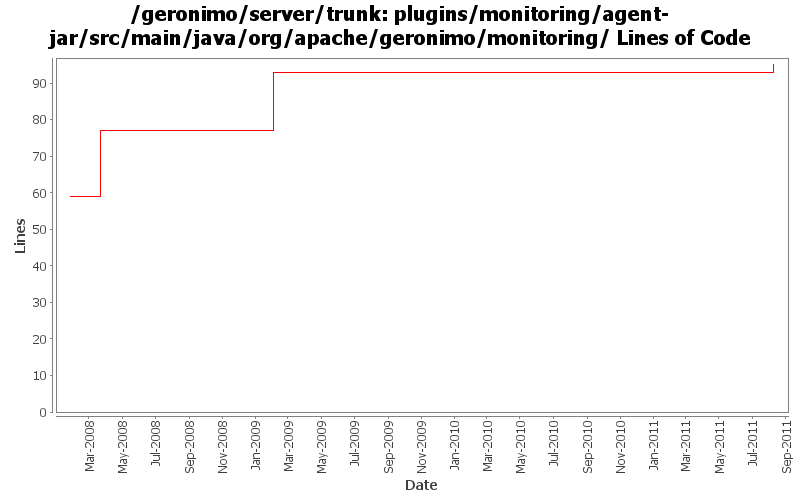

[root]/plugins/monitoring/agent-jar/src/main/java/org/apache/geronimo/monitoring
 snapshot
(4 files, 1217 lines)
snapshot
(4 files, 1217 lines)

| Author | Changes | Lines of Code | Lines per Change |
|---|---|---|---|
| Totals | 5 (100.0%) | 36 (100.0%) | 7.2 |
| viet | 1 (20.0%) | 18 (50.0%) | 18.0 |
| gawor | 1 (20.0%) | 16 (44.4%) | 16.0 |
| rwonly | 1 (20.0%) | 2 (5.6%) | 2.0 |
| ecraig | 2 (40.0%) | 0 (0.0%) | 0.0 |
GERONIMO-5712 Geronimo should remember the monitoring server enablement status. ( Thanks Fang Shenghao for the patch!)
2 lines of code changed in 1 file:
added license headers
16 lines of code changed in 1 file:
Fix for geronimo-3774. Moves all hardcoded string and numerical constants to one file.
18 lines of code changed in 1 file:
Monitoring Plugin-
Recursively converted all windows encoded files to unix encoding.
0 lines of code changed in 2 files: